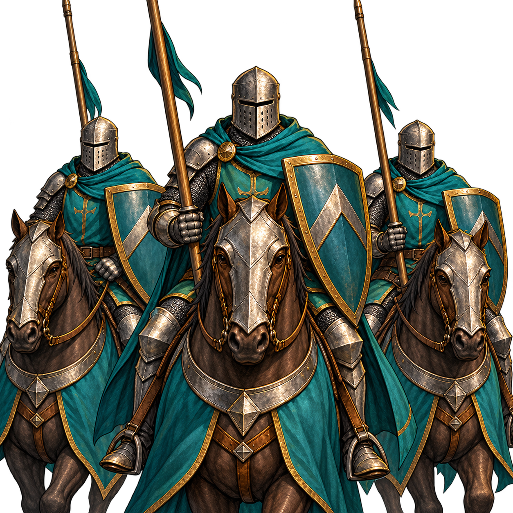

Règles du jeu
Combats tactiques et victoire
Programmer ses ordres, exploiter les terrains et comprendre la fin d’une bataille.

Les règles de ce thème
Le plateau
Les nouveaux combats utilisent trois colonnes et cinq rangées, avec son camp en bas. Cinq cartes au maximum sont déployées, héros compris. Les réserves et ordres adverses restent cachés.
Les positions préparées dans l’armée influencent le départ. Un commandant en réserve reste attaquable selon la portée ; une fois déployé, il est ciblé sur sa case.
Ordres et résolution
Chaque tour dispose d’un budget d’ordres lié au Commandement final du héros.
| Commandement final entier | Ordres par tour |
|---|---|
| 2 | |
| 3 | |
| 4 | |
| 5 |
Le Commandement final est arrondi à l’entier inférieur, puis borné entre 2 et 5 ordres. Déployer, déplacer, attaquer, défendre, rallier ou charger coûte un ordre ; une carte reçoit au plus un ordre par tour.
Les deux camps résolvent leurs intentions selon leurs priorités. Les mouvements précèdent les attaques de la même priorité ; les dégâts sont calculés avant leur application simultanée. Une carte sans ordre défend sur place.
Déplacement et portée
L’infanterie ordinaire se déplace orthogonalement ; épéistes et cavaleries ont les directions de leur spécialité. Une charge peut parcourir deux cases rectilignes sur un trajet autorisé.
Les archers utilisent leur portée sans avancer après destruction de leur cible. Cavalerie légère et archers montés disposent de harcèlements distincts. Si la cible est sortie de portée, l’attaque peut échouer sans changer automatiquement de cible.
Terrain et spécialités
Forêt, colline, rochers, eau, pont et structures modifient les conditions. Certains terrains interdisent charges ou harcèlements. Un bonus de défense de 25 % n’est pas une promesse de 25 % de dégâts en moins.
Les lanciers sont spécialisés contre la cavalerie ; le mur de lances ne protège qu’après son activation. L’infanterie lourde résiste aux archers et ne traverse pas l’eau sans passage autorisé.
Moral, cohésion et bonus
Le ralliement redonne du moral dans ses limites. La cohésion appartient au camp, pas à une troupe : des ennemis sur sa rangée de départ peuvent la réduire.
Un bonus central se capture par occupation officielle de sa case. Passer dessus pendant un harcèlement ne suffit pas. Les effets temporaires modifient les caractéristiques ; les gains permanents passent par la fin de bataille.
Victoire, fuite et conséquences
La chute du commandant ou une cohésion à zéro peut terminer le combat. Une limite de tours évite les blocages et utilise le bilan du moteur ; une égalité reste possible.
Fuir concède la victoire et conserve les blessures déjà subies. Quitter physiquement la zone n’est pas une annulation libre. Les pertes et récompenses sont appliquées ensuite au monde.
Systèmes historiques et prévus
Une ancienne sauvegarde peut conserver une bataille en duels. Ses passes et sa volée d’ouverture ne s’appliquent pas telles quelles au plateau actuel. Les nouveaux concepts de combat à distance restent des projets distincts.